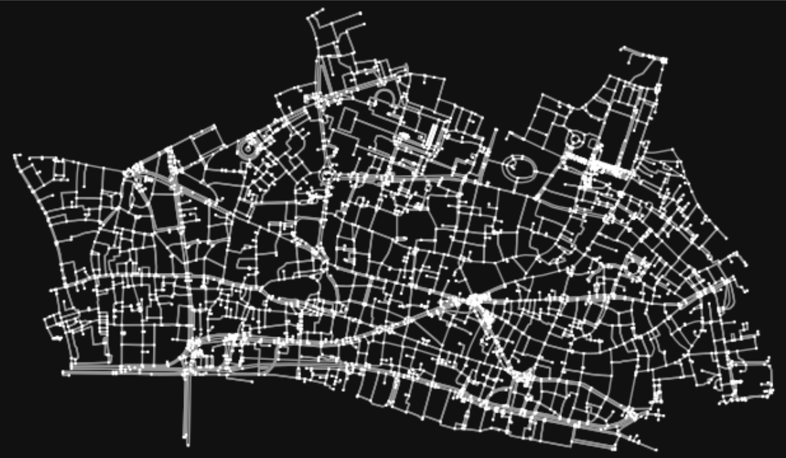

Cities and Road Networks
My masters dissertation revealed weak relationships between hierarchical structure in the road network of Europe and human geography.
I extracted OpenStreetMap data as a network graph to conduct percolation analysis, then modelled the nested relationships of percolation clusters as a hierarchical tree for phenetic analysis.